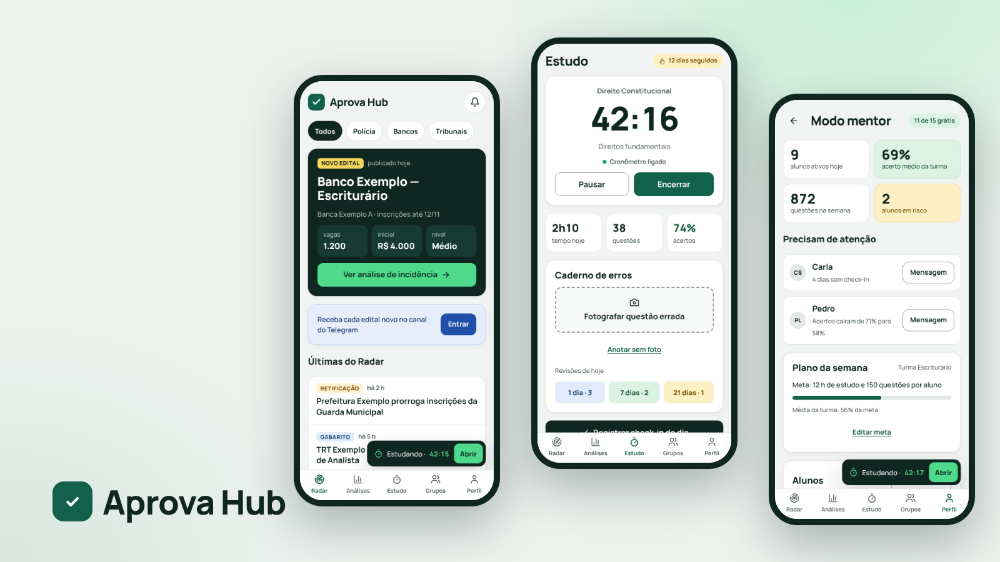
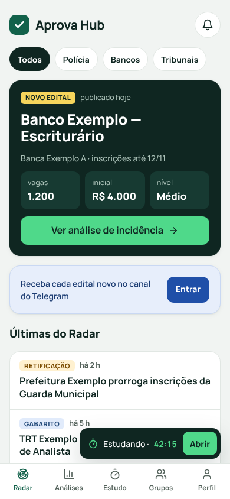
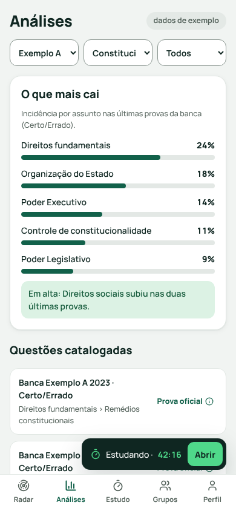
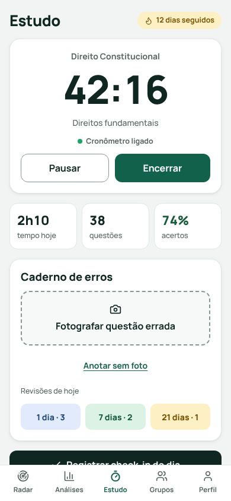
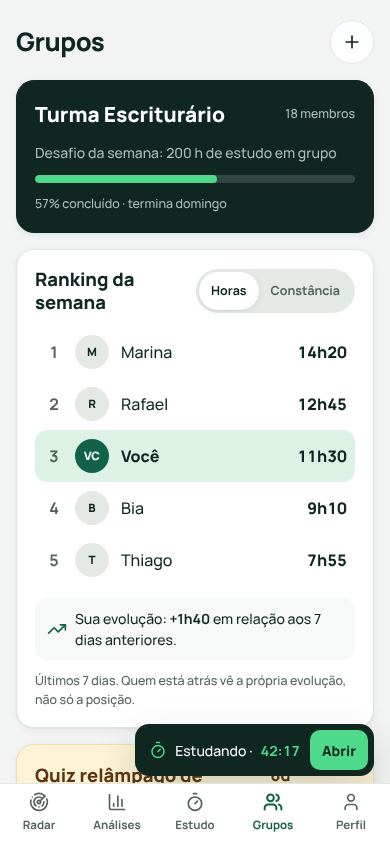
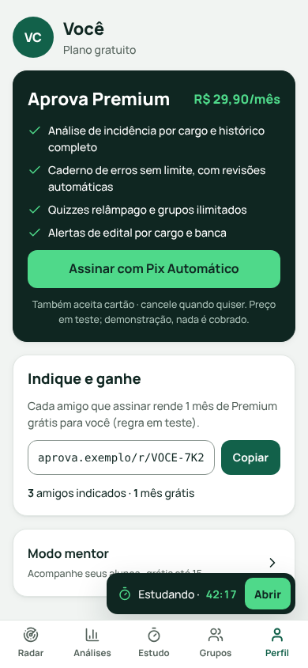
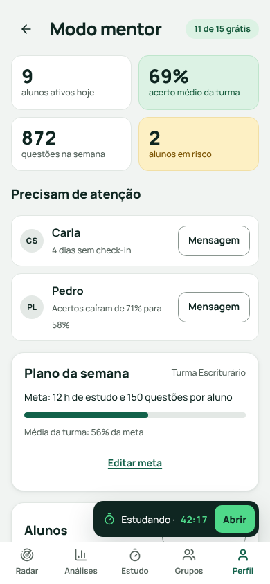

Aprova Hub
Um app que junta o que o concurseiro hoje espalha em grupos, planilhas e cadernos: edital novo, o que mais cai, tempo de estudo, questões erradas e a turma estudando junto.

Contexto
O Aprova Hub nasceu de um projeto anterior meu, o Mentor OS, uma ferramenta para o mentor de concurso acompanhar a turma. Desenhando o lado do aluno, percebi que o concurseiro sem mentor tem as mesmas dores: não sabe quando sai edital, não sabe o que mais cai e estuda sozinho. Ampliei o produto para ele e mantive o acompanhamento de alunos como Modo mentor.
O app é grátis para o aluno e tem um plano Premium. É um projeto conceitual, mas funciona de verdade no navegador, com dados salvos no aparelho. Todos os órgãos, bancas, pessoas e números são fictícios, e as questões do quiz são de demonstração.
O concurseiro acompanha edital em grupo de mensagens, estatística de prova em planilha e erro em caderno de papel, e estuda sozinho sem saber se está no ritmo.O problema, em uma frase
Processo
Parti do benchmark que fiz para o Mentor OS: o GymRats, de desafios de check-in em grupo; o Qconcursos e o Tec Concursos, bancos de questões focados no aluno; as planilhas e páginas de Notion de mentoria; e os grupos de WhatsApp. O que faltava ficou claro: informação de edital, estatística de prova e estudo em grupo vivem em lugares diferentes.
Constância vira jogo
Desafios em grupo mostram que aparecer todo dia mantém as pessoas. Trouxe sequência de dias, desafio da turma e ranking, que mostra também a sua evolução para não desanimar quem está atrás.
Estudar o que mais cai
Bancos de questões têm muita estatística, mas ela fica escondida. A aba Análises mostra em barras simples o que mais cai por banca e matéria, e a análise por cargo é o gancho do Premium.
O canal já existe
Edital novo circula em grupos e canais. Em vez de competir, o Radar leva para o canal do Telegram, e convite de grupo e mensagem do mentor saem prontos para o WhatsApp.
Mantive as proto-personas do Mentor OS, marcadas como hipótese, e acrescentei a do concurseiro que estuda sozinho. A partir de uma referência de seis telas, organizei o app em cinco abas: Radar, Análises, Estudo, Grupos e Perfil, com o Modo mentor dentro do Perfil. Reaproveitei os fluxos que já tinha desenhado, como check-in com cronômetro e caderno de erros com revisão em 1, 7 e 21 dias, e desenhei os novos: foto da questão errada, quiz com o artigo citado e botão para reportar erro, e assinatura.
Na primeira versão (Mentor OS), avaliei o protótipo com as 10 heurísticas de Nielsen e encontrei 8 problemas, dos quais corrigi 6. As correções vieram para o Aprova Hub: o aviso de cronômetro ligado em qualquer tela, o tempo que pode ser corrigido ao encerrar e o botão de desfazer na revisão de erros. O mais grave era justamente o cronômetro esquecido, que distorcia o tempo de estudo.

Solução
O Radar abre com o edital mais recente da área escolhida e as últimas notícias, com atalho para a análise do que mais cai. Análises mostra, por banca e matéria, os assuntos com mais incidência e as questões catalogadas. Estudo tem cronômetro, números do dia, caderno de erros com foto da questão e a fila de revisões. Grupos traz o desafio da turma, o ranking com a sua evolução, o quiz relâmpago de domingo e o convite pelo WhatsApp. No Perfil ficam o Premium, o indique e ganhe, o Modo mentor e a exportação ou exclusão dos dados.






Handoff
Para o produto sair do papel, o desenvolvimento precisa de mais do que telas bonitas. Entreguei:
- O app funciona de verdade no navegador e pode ser instalado no celular. Os dados ficam salvos no aparelho, com exportação em arquivo e opção de excluir a conta.
- O banco já está desenhado para a versão com login, a partir do Mentor OS, com regras de acesso por aluno e mentor.
- Regras escritas e iguais em todo o produto: revisão em 1, 7 e 21 dias, ranking com evolução própria, limite de 15 alunos grátis no Modo mentor.
- Cores e tipografia em tokens, com o contraste de cada par anotado.
Resultado
- 7
- telas no app
- 8
- problemas achados na heurística
- 6
- corrigidos
- 5
- produtos no benchmark
O próximo passo é testar com 5 concurseiros e 2 mentores. Eu pediria para encontrar o edital mais recente da área, descobrir o que mais cai na matéria, registrar uma sessão de estudo, fotografar uma questão errada e entrar no quiz do grupo. Mediria a taxa de sucesso, o tempo de cada tarefa e se a pessoa entende o que o Premium oferece a mais.
Modelo de negócio
O aluno usa de graça e pode assinar o Aprova Premium, com cobrança recorrente por Pix Automático ou cartão por meio de um provedor de pagamento. O acesso é liberado sozinho quando o pagamento cai e pausado se atrasar, sem apagar nada. Na demonstração, nada é cobrado.
Cada pagamento chega descontado da taxa do provedor e das comissões, e o saldo aparece no painel do dono, de onde ele retira o lucro para a conta cadastrada. Os preços e taxas são hipóteses a validar.
Aprova Premium · R$ 29,90/mês
Para o aluno: análise por cargo e histórico completo, caderno de erros sem limite, quizzes e grupos ilimitados e alertas de edital.
Mentor Pro · R$ 97/mês
Para o mentor que passa de 15 alunos: várias turmas, alertas de quem sumiu, plano da semana e mensagem pelo WhatsApp.
Escola ou cursinho · R$ 790/mês
Ticket alto: vários mentores, painel da escola e suporte prioritário.
Para crescer sem vender pessoalmente, o desenho inclui indique e ganhe (um mês de Premium por amigo que assinar), canal de editais no Telegram, convite de grupo pelo WhatsApp e o Modo mentor grátis até 15 alunos, que traz turmas inteiras. Tudo é hipótese a validar, e a fase de produção ainda não começou.
Aprendizados
- Ampliar o público mudou o produto. O que era ferramenta do mentor virou app do aluno, e o mentor passou a ser um modo dentro dele.
- Dado de exemplo precisa parecer exemplo. Órgãos e bancas fictícios e o selo "dados de exemplo" evitam que um número inventado vire verdade.
- Crescimento precisa estar na tela. Telegram, convite pelo WhatsApp e indique e ganhe são partes do desenho, não um extra de marketing.
Entregas
- App funcionandoVersão de demonstração: os dados ficam salvos no seu aparelho
- DocumentaçãoPesquisa, fluxos, decisões de UI, heurística e roteiro de teste
- Estrutura do bancoTabelas e regras de acesso para a versão com login
- Página de vendasPlanos, teste grátis e perguntas frequentes
- Painel do donoReceita, assinantes, afiliados e retirada do lucro
App para quem tem carro elétrico achar um carregador livre, funcionando e compatível, reservar a vaga e pagar a recarga no mesmo lugar.